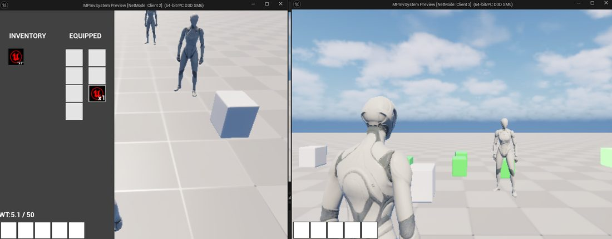

Client Work · Freelance
A server-authoritative inventory system built for a client, designed to hold up at 16 to 32 concurrent players without desyncing or letting anyone dupe an item.

Designed and implemented from a client's requirements: a server-authoritative multiplayer inventory system in Unreal Engine 5, built to support 16–32 concurrent players. Server-authoritative means the server, not the client, is the source of truth for every item and every move, which is what actually prevents duplication exploits and desync between players in a live multiplayer session.